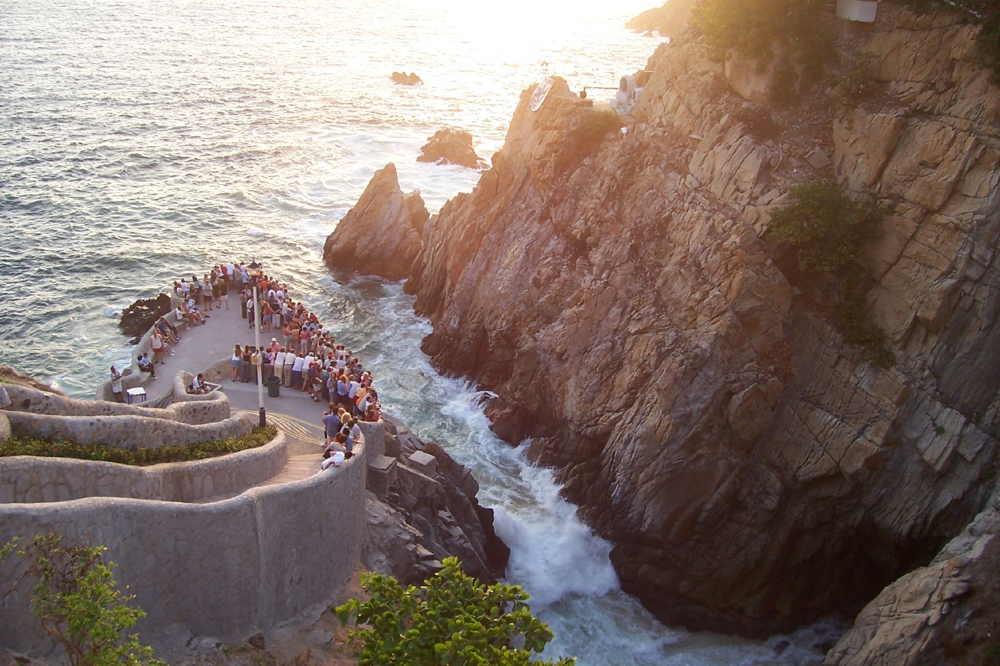
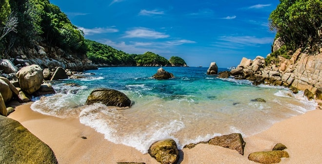
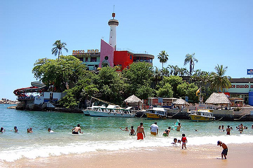
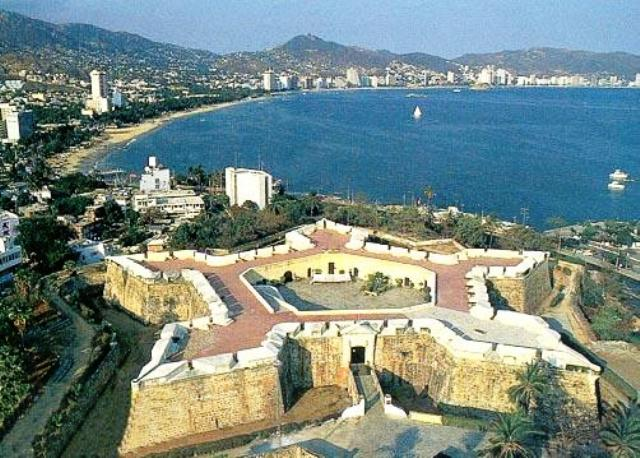

Para que vean qque Acapulco aún es chido a su manera y que no ah merto el turismo
Ahi va unos lugares a donde pueden ir a pasear.
La Quebrada
Visitar Acapulco y no ir a presenciar los clavados en la Quebrada es imperdonable. Es un espectáculo único en México en donde valientes clavadistas se lanzan desde un acantilado de 35 metros de altura a donde rompen las olas al pie de las rocas de la famosa quebrada de Acapulco.

La Isla de la Roqueta
Esta muy padre la verdad

Mundo Mágico Marino
i te gustan los deportes acuáticos En Mundo Mágico Marino hay facilidades para que los puedas practicar. También hay un acuario donde se exhiben diferentes ejemplares de la vida marina, pájaros exóticos y tropicales con los que puedes convivir, una sala de proyección, museo, restaurante con una excelente panorámica vista de las playas Caleta y Caletilla la Isla Roqueta, show marino y buceo.

Fuerte de San Diego
El Fuerte de San Diego fue construido en el Siglo XVII, en la actualidad son las instalaciones del Museo Histórico de Acapulco. Es un lugar para aprender todo lo relacionado con la historia de este bello puerto desde la época prehispánica a la Colonia.

Eso es todo.